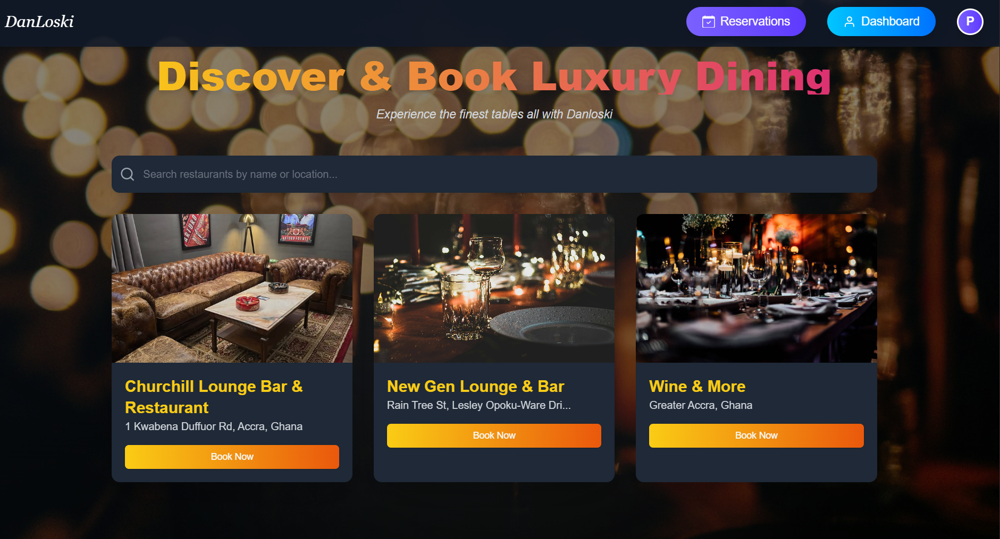
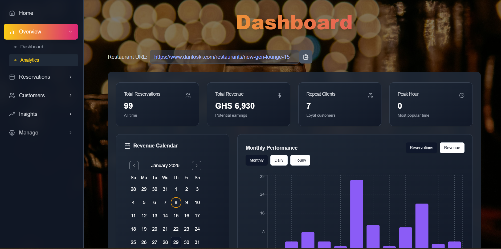
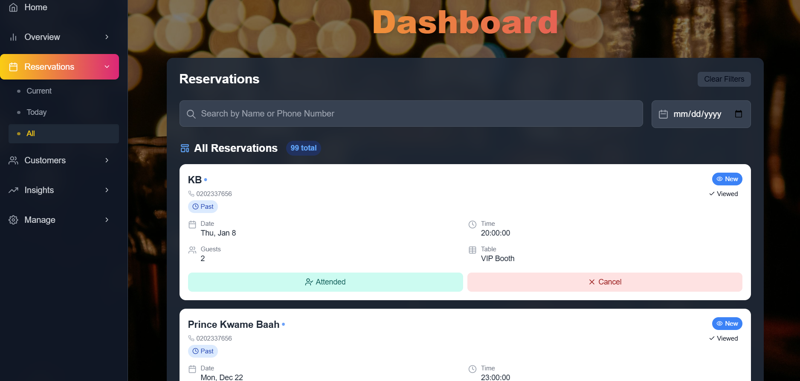

Platform Guide
DanLoski
Client Onboarding Guide
Restaurant Reservation & Management Platform
"Experience the finest tables, all with DanLoski"
Version 1.0 | March 2026 | danloski.com
Getting Started
1.Welcome to DanLoski
1.1What is DanLoski?
1.2Who is it for?
1.3Creating Your Account
1.4Restaurant Verification & Going Live
The Customer Experience
2.Discovering & Browsing Restaurants
3.Making a Reservation
3.1Step-by-Step Booking Flow
3.2Booking as a Guest vs. Registered User
3.3Payment & Deposit
3.4After Booking — Confirmations & Reminders
The Restaurant Owner Dashboard
4.Dashboard Overview & Analytics
5.Managing Reservations
6.Customer Management
7.Business Insights & Spending Analytics
8.Email Marketing
Setting Up Your Restaurant
9.Booking Costs & Pricing Tiers
10.Tables & Seating Arrangement
11.Restaurant Photos & Gallery
12.Opening Hours & Closure Days
Communications
13.Automated Email Notifications
14.Frequently Asked Questions
1.1 What is DanLoski?
DanLoski is a premium online restaurant reservation and management platform serving the Ghanaian market. It connects diners with top dining establishments through a seamless online booking experience, while giving restaurant owners a powerful set of tools to manage their bookings, customers, and communications — all from one place.
Whether a customer is discovering a new restaurant or a returning regular, DanLoski makes the entire journey — from browsing to booking to dining — smooth and professional. For restaurant owners, it removes the friction of managing reservations manually and provides real-time visibility into their business performance.
1.2 Who is it for?
🍽
Diners & Customers
Anyone looking to discover and book a table at a quality restaurant in Ghana. Customers can browse, book, pay a deposit, receive reminders, and leave reviews — all in one place.
🏢
Restaurant Owners
Businesses looking to offer online reservations and manage their operations more efficiently. Owners get a full dashboard with reservations, customer data, marketing tools, and business analytics.
1.3 Creating Your Account
Getting started on DanLoski takes just a few minutes. Visit danloski.com and click Sign Up. You will be asked to choose your account type:
1
Choose "Business Owner"
Select this option when signing up. This gives you access to the restaurant owner dashboard and management tools.
2
Enter your details
Provide your name, email address, password, business name, location, phone number, and a profile image for your restaurant.
3
Submit your registration
Your account and restaurant listing are created immediately. You can log in and begin configuring your restaurant straight away.
1.4 Restaurant Verification & Going Live
For quality assurance, all new restaurant listings go through a brief administrative review before becoming publicly visible to customers. This typically takes up to 7 days from registration.
What this means for you: You can log in and fully configure your restaurant — set your tables, operating hours, pricing, and photos — while the review is in progress. Once approved, your restaurant will immediately appear on the DanLoski home page and become discoverable by diners.

Figure 1: The DanLoski home page — customers can search and browse all verified restaurants, then book a table directly from the listing cards.
The Home Page
The DanLoski home page is the first thing customers see when they visit the platform. It presents all verified restaurants in a clean, visual layout with a prominent search bar at the top.
For Customers
- Search restaurants by name or location
- Browse restaurants displayed as picture cards
- Each card shows the restaurant name, location, and a featured photo
- Click "Book Now" to go straight to the booking page
- A Nearby Restaurants panel shows locations close to the customer based on their current position
Navigation Bar
- Reservations — View all of a customer's upcoming and past bookings
- Dashboard — Accessible to restaurant owners only
- Profile icon — Sign in, sign up, or manage the account
Visibility Rule
- Only verified restaurants appear on the home page
- Unverified listings are hidden from public view until approved
- Verification is a one-time process per restaurant
Tip for restaurant owners: Your restaurant's profile image and name are the first things a potential customer sees on this page. A high-quality, well-lit photo makes a strong first impression and significantly increases click-through to your booking page.

Figure 2: The restaurant booking page — customers select a date, party size, and available time slot. Customer reviews and ratings are displayed on the right-hand panel.
3.1 The Restaurant Page
Clicking a restaurant from the home page opens its dedicated page. This is split into two tabs:
- Reserve — The booking interface where customers make their reservation
- Info — Restaurant description, photos, map location, and contact details
The top of the page shows a large hero image of the restaurant, its name, and its address. Below that, customers will find the live customer reviews panel showing the star rating and written feedback from past diners.
3.2 Step-by-Step Booking Flow
1
Select a Date
A calendar shows all available future dates. Dates when the restaurant is closed are greyed out and cannot be selected.
2
Choose Party Size
Select the number of guests from a dropdown (1 to 20+). The applicable deposit amount is shown immediately below the selection.
3
Pick a Time Slot
Available time slots are shown based on the restaurant's opening hours. Slots that are fully booked are automatically hidden. The customer clicks their preferred time to continue.
4
Enter Contact Details & Occasion
A booking dialog opens. Signed-in users have their name and email pre-filled. Guests enter their details manually. An optional occasion type (birthday, anniversary, business dinner, etc.) and any special requests can be added here.
5
Select a Table (if applicable)
If the restaurant has set up individual tables for customers to choose from, available options matching the party size are shown. The customer selects their preferred table.
6
Pay the Deposit
If a deposit is required, a secure payment screen opens. The customer pays in Ghana Cedis (GHS) using a card or mobile money. On successful payment, the reservation is confirmed.
7
Confirmation
A confirmation message appears on screen. The customer receives a confirmation email, and the restaurant owner receives an instant notification of the new booking.
3.3 Booking as a Guest vs. a Registered User
Customers do not need an account to make a reservation. Both options are fully supported:
| Feature | Registered User | Guest (No Account) |
|---|
| Make a reservation | ✅ | ✅ |
| Name & email pre-filled | ✅ Auto-filled from profile | ❌ Must enter manually each time |
| View past reservations | ✅ On the Reservations page | ✅ On the Guests page (via email verification) |
| Leave reviews & ratings | ✅ After a completed visit | ❌ Not available |
| Receive reminder & thank-you emails | ✅ | ✅ |
Guest bookings: Customers who book without an account receive a unique booking reference. They can use this — along with their email address — to look up their reservation at any time on the DanLoski Guests page.
3.4 Payment & Deposit
DanLoski supports deposit-based bookings to help restaurants reduce no-shows and confirm guest commitment. When a deposit is required, customers pay securely through the platform's integrated payment system before their reservation is confirmed. Payments are processed in Ghana Cedis (GHS).
- Deposits are configured by the restaurant owner (see Chapter 9)
- If no deposit is set, the booking is confirmed immediately without payment
- Payment is processed securely — card and mobile money options are available
- If payment fails or is cancelled, the customer is returned to the booking form
3.5 After Booking — Confirmations & Reminders
Once a reservation is made, the platform handles all follow-up communication automatically:
| Timing | Who Receives It | Content |
|---|
| Immediately | Customer | Reservation confirmation email with full booking details |
| Immediately | Restaurant Owner | New reservation alert with all guest details and a link to the dashboard |
| 2 hours before | Customer | Automated reminder email with date, time, and restaurant location |
| Day after visit | Customer (if attended) | Personalised thank-you email encouraging them to return and book again |
| On cancellation | Customer | Cancellation notice with restaurant contact details for rescheduling |
For restaurant owners: All of these emails are sent automatically — no manual action is required. The only step you need to take is marking a reservation as "Attended" after the customer visits, which triggers the thank-you email the following day.

Figure 3: The Dashboard Overview — KPI summary cards at the top, a Revenue Calendar showing busy dates at a glance, and a Monthly Performance chart that can be viewed by month, day, or hour.
Your Dashboard at a Glance
When you log in as a restaurant owner, you land on the Overview tab of your Dashboard. This gives you an immediate snapshot of how your restaurant is performing. The left-hand sidebar lets you navigate between all sections of the platform.
Key Performance Cards
| Metric | What it Shows |
|---|
| Total Reservations | The total number of bookings made at your restaurant since you joined DanLoski. |
| Total Revenue | The total deposits collected through the platform, displayed in GHS. |
| Repeat Clients | The number of customers who have returned to book more than once — a direct measure of guest loyalty. |
| Peak Hour | The most popular time slot for reservations at your restaurant, helping you plan staffing and preparation. |
Revenue Calendar
A calendar view of the current month where each date is colour-highlighted based on revenue generated. At a glance, you can see which dates were your busiest and which were quieter — ideal for spotting seasonal patterns and planning ahead.
Monthly Performance Chart
A bar chart that shows your reservation count and revenue over time. Three views are available to help you analyse performance at different levels:
- Monthly — Compare each month of the year side by side
- Daily — Drill into a specific month to see performance day by day
- Hourly — See which time slots in the day are most popular, helping you optimise your scheduling
Your public booking link: At the top of the Dashboard, your unique restaurant booking URL is displayed (e.g., danloski.com/restaurants/your-restaurant-name). Share this link on your social media, printed menus, or website so customers can book directly.

Figure 4: The Reservations tab — each booking shows the customer name, payment status, date, time, party size, assigned table, and action buttons to mark attendance or cancel.
The Reservations Tab
The Reservations tab lists every booking made at your restaurant. New reservations appear at the top and are highlighted with a New badge until you view them. Each entry shows:
- Customer name and phone number
- Payment status — Paid or Pending
- Date and time of the reservation
- Number of guests and table assigned
- Any occasion or special requests noted by the customer
Actions You Can Take
Two primary action buttons sit on each reservation card:
✓ Mark as Attended
Press this after the customer completes their visit. This records the visit in your analytics and automatically triggers a personalised thank-you email to the guest the following day — with no further action needed from you.
✕ Cancel
Press this to cancel the reservation. The customer is immediately sent an automated cancellation email containing your restaurant contact details so they can reschedule if they wish.
Filtering & Searching
- Search bar — Find a specific booking instantly by typing the customer's name or phone number
- Date filter — Use the date picker to view all reservations on a specific date
- View tabs — Switch between Current (upcoming), Today, and All reservations
Assigning Tables (Manual Mode)
If your restaurant is set up with Manual Table Assignment, you can assign a specific table to each reservation directly from this tab. This is helpful once you've reviewed the full day's bookings and want to optimise your floor plan — for example, placing large groups at round tables or regulars at their preferred spots.

Figure 5: The Customers tab — a full searchable customer list showing name, contact details, visit history, last visit date, and customer status. Bulk import is supported via Excel or CSV.
Your Customer Database
Every person who makes a reservation at your restaurant is automatically added to your customer database. You don't need to do anything — the system builds this list for you over time. The customer list is fully searchable and shows the following information for each person:
| Column | What it Means |
|---|
| Customer | The full name of the customer |
| Contact | Their email address and phone number |
| Source | How they came into your database — Reservation for online bookings or Imported for uploaded contacts |
| Visits | Total number of reservations they have made at your restaurant |
| Last Visit | The date of their most recent reservation |
| Status | New for first-time guests, Regular for returning customers |
Importing an Existing Customer List
Already have a list of customers from a previous booking system, loyalty programme, or mailing list? You can import them directly into DanLoski in bulk. Supported file formats:
- Excel (.xlsx or .xls)
- CSV (.csv)
Download the provided template (Excel Template or CSV Template button) to ensure your file is in the correct format — the required columns are Name, Phone, and Email. Once uploaded, the contacts are immediately available for email marketing campaigns.
Adding Customers Manually
For individual contacts — such as a regular who booked by phone — you can add customers one at a time directly through the form in the Customers tab by entering their name, email address, and phone number.
Marketing tip: Your customer database is the audience for your email marketing campaigns. The larger and more complete your database, the more people you can reach when you send out promotions, event invitations, or seasonal offers.

Figure 6: The Insights tab — a full-year Revenue Analytics chart, a Top Customers pie chart with downloadable report, and a Top Spending Customers leaderboard showing visit counts and lifetime spend.
Revenue Analytics Chart
A full-width bar chart plots your revenue across the year. Toggle between Weekly and Monthly views to identify seasonal trends, track growth over time, and spot patterns. Each bar represents total deposit revenue collected in that period.
Summary Performance Figures
Four key numbers are displayed at the top of the Insights tab:
- Total Revenue — All deposits ever collected through the platform
- Best Month Revenue — Your highest single-month earnings on record
- Return Rate — The percentage of your customers who have come back for a second visit or more
- Attended Ratio — How many reservations resulted in an actual visit (e.g., 5 out of 7 bookings showed up)
Top Customers Contribution
A pie chart breaks down your total reservation volume by individual customer, showing which regulars drive the most business at your restaurant. This helps you identify your most valuable guests for recognition, loyalty perks, or personal outreach.
Click the Report button to download a PDF summary of this data — useful for business reviews, presentations, or sharing with your team.
Top Spending Customers Leaderboard
A ranked table of the customers who have paid the most in total deposits at your restaurant, showing:
- Customer name and email
- Total number of visits
- Cumulative amount spent in GHS
- Average spend per visit — useful for understanding how valuable each customer interaction is
Loyalty tip: Use the Top Customers leaderboard to identify guests worth reaching out to personally — a complimentary starter, a priority booking, or a personalised message from the owner goes a long way in retaining your most loyal diners.

Figure 7: The Email Marketing panel — select recipients from your customer database, write your subject and message, optionally add a reservation date and file attachment, then send to the whole list or selected individuals.
Sending a Campaign
The Email Marketing tool lets you compose and send a branded email campaign to your customers directly from your dashboard — no third-party email tool needed. Every email is sent from your restaurant's name, so it lands in inboxes looking professional and personalised.
Composing Your Email
| Field | What to Enter |
|---|
| Recipients | Choose individual customers from your database, or click Select All to send to everyone with a valid email address. The count of available recipients is shown. |
| Subject | The subject line that appears in the recipient's inbox — keep it short and compelling. |
| Reservation Date | Optional. If your message references a specific upcoming date (e.g., a Valentine's Day dinner event), enter it here so it's included in the email. |
| Message | The body of your email. Write your announcement, promotion, or personal message here. |
| Attachment | Optional. Attach a file up to 5 MB — for example, a PDF menu, event flyer, or voucher. |
How the Email Looks to Recipients
All marketing emails are automatically wrapped in a professionally designed template that includes:
- Your restaurant name displayed prominently in a dark luxury header
- A personalised greeting using the customer's name
- Your message body
- A "Reserve Your Table" call-to-action button linking directly to your booking page
- Your restaurant's phone and email contact details
- A professional footer with unsubscribe and privacy links
Preview before sending: Use the Preview button to see exactly how your email will appear in a recipient's inbox before it is sent. This lets you catch any errors and ensure the message looks right.
Campaign ideas: New menu launch announcements • Seasonal offers and festive promotions • Event invitations (private dining, live music nights) • Customer appreciation messages • Re-engagement campaigns for customers who haven't visited recently

Figure 8: The Booking Pricing panel — a single flat deposit field for simple pricing, and a tiered pricing section where different deposit amounts can be set for different party size ranges.
What is a Booking Deposit?
A booking deposit is an upfront payment charged to customers when they make a reservation. It serves as confirmation of intent and significantly reduces no-shows, since guests have a financial commitment to their booking. Deposits are paid in Ghana Cedis (GHS) through the platform's secure payment system.
Optional: Setting the deposit amount to zero (GHS 0) makes bookings completely free — customers can reserve without any upfront payment. This is a good option for restaurants that prefer to rely on goodwill or operate in a casual setting.
Setting a Flat Deposit
The simplest approach: set one deposit amount that applies to every reservation regardless of party size. Enter the amount in GHS and click Update. This is shown to customers during the booking process below the party size selector.
Tiered Pricing by Party Size
For greater flexibility, you can set different deposit amounts depending on how many guests are in the party. This allows you to charge more for larger groups that require more preparation, table space, or resources.
How to Set Up a Tier
- Enter a minimum and maximum party size for the tier (e.g., min: 6, max: 10)
- Enter the deposit amount in GHS for that range
- Click Add Pricing Tier
- Repeat for each party size range you want to price differently
Example Setup
| Party Size | Deposit Amount |
|---|
| 1–2 guests | GHS 80 |
| 3–5 guests | GHS 100 |
| 6–10 guests | GHS 150 |
| 11+ guests | GHS 250 |
When a customer selects their party size during booking, the correct deposit is shown automatically. Tiers can be deleted individually at any time.

Figure 9: The Table Management section — choose between Automatic (customer selects) and Manual (staff assigns) modes, then add individual tables with a name, seat count, quantity, and optional location notes.
Table Assignment Mode
Before adding tables, choose how you want them to be assigned:
🔄 Automatic Assignment
Customers browse available tables and choose their preferred spot during the booking process. Real-time availability is shown. Ideal for restaurants where the specific table experience matters to guests — window seats, VIP booths, terrace spots.
👤 Manual Assignment
You assign tables to reservations yourself from the Reservations tab after bookings come in. Customers are not shown table options during booking. Best suited for larger venues, busy services, or restaurants that prefer full control over their floor plan.
Adding Your Tables
Add each table (or group of identical tables) using the form. You will need to provide the following for each:
| Field | Description | Example |
|---|
| Table Name / Number | A label that identifies the table to both staff and customers | A1, Window Seat, VIP Booth |
| Seats | How many guests this table can accommodate | 2, 4, 6, 8 people |
| Quantity | How many tables of this same configuration to create at once | 1, 3, 5 |
| Location Notes | An optional hint about where the table is positioned in the restaurant | Near the window, Corner spot, Outdoor terrace |
How Tables Work for Customers
In Automatic mode, after selecting a time slot, the customer sees all available tables that can seat their party. They pick one, and it is instantly marked as taken for that time slot — preventing double bookings. If no exact-capacity table is free, tables with more seats are offered as an alternative.
Recommendation: Set up your tables before your restaurant goes live. Without tables configured, the platform still accepts reservations, but customers won't be able to choose a specific spot. Getting your floor plan set up early creates a much better first impression.

Figure 10: The Restaurant Image Management section — update the main profile photo used on the home page, and upload up to 6 gallery images that appear in the photo carousel on your booking page.
Your Profile Image
Your main profile image is the photo that represents your restaurant across the platform — it appears on the home page listing card and at the top of your booking page. This is the first visual a potential customer sees, so it makes a significant difference to whether they click through to book.
- Upload a new profile image anytime from the Update Restaurant Image section
- Supported formats: JPG, PNG, WebP
- The new image replaces the old one immediately upon upload
Gallery Images
In addition to the profile photo, you can upload a gallery of up to 6 additional images that appear in the photo carousel on your restaurant's booking page. These are ideal for showcasing your:
- Interior ambience and décor
- Dining areas and private spaces
- Signature dishes and cocktails
- Outdoor seating or terrace areas
- Special events or themed evenings
After uploading, thumbnail previews are shown with a counter (e.g., "2/6 images uploaded"). Individual images can be removed to make room for updated photos at any time.
Photography tip: Listings with multiple high-quality, well-lit photos consistently outperform those with a single image. Aim for a variety of shots — a welcoming entrance, a beautifully set table, a standout dish, and a candid atmosphere shot all help customers picture themselves dining with you. Landscape-oriented photos (wider than tall) look best on the platform.
Setting Your Reservation Hours
Your reservation hours define the window within which customers can book a table. The system uses these times to automatically generate the available time slots shown on your booking page. Three settings control this:
| Setting | What it Does | Example |
|---|
| First Reservation Time | The earliest time slot a customer can book (your opening time for reservations) | 12:00 PM |
| Last Reservation Time | The latest time slot available (your last seating time) | 9:00 PM |
| Slot Duration | How long each reservation slot lasts, in minutes. This also determines how many slots exist between your opening and closing times. | 60 minutes |
| Max Reservations per Slot | The maximum number of simultaneous bookings allowed in the same time slot, preventing overbooking | 5 |
Example: Opening at 12:00 PM, last seating at 9:00 PM, with 60-minute slots = 10 available time slots: 12:00, 13:00, 14:00, 15:00, 16:00, 17:00, 18:00, 19:00, 20:00, 21:00.
Managing Closure Days
Closure days are dates on which your restaurant will not accept reservations. They appear as greyed-out, unselectable dates on the customer-facing booking calendar. Two types of closure are available:
📅 One-Time Closure
Block a specific calendar date — for a private event, public holiday, renovation, or staff training day. Enter the date and an optional reason. The closure applies only to that one date.
🔁 Recurring Closure
Block the same day every week permanently — e.g., every Monday if you are closed on Mondays. This repeats automatically without you needing to add it each week.
Additional Options
- All-day closure — The entire day is blocked, no bookings possible
- Time-specific closure — Only a particular time window is blocked (e.g., 2:00–5:00 PM for a private function), while other slots in the same day remain bookable
- Reason field — An optional note to remind yourself why a closure was added
All closures are listed in the manager and can be deleted individually if plans change and you need to restore availability on a blocked date.
DanLoski handles all reservation-related communications for you. From the moment a customer books to the day after their visit, the platform sends professionally branded emails at the right moments — with no manual effort from you or your team.
The Five Email Types
1. Reservation Confirmation — Sent to the Customer
Sent immediately after a booking is completed. Includes the full reservation details: date, time, party size, table, occasion, and your restaurant's contact information. This email reassures the customer their booking is confirmed and gives them everything they need to prepare for their visit.
2. New Reservation Alert — Sent to You (Restaurant Owner)
Sent simultaneously to you every time a new booking is made. Contains all the guest's details — name, contact, party size, date, time, table, and any special requests — plus a direct link to your dashboard to manage the booking. No need to log in constantly; you'll know the moment a booking arrives.
3. Reservation Reminder — Sent to the Customer
Sent automatically 2 hours before the scheduled reservation. Reminds the guest of their booking with date, time, party size, and your restaurant's address and contact details. This reduces late arrivals and last-minute cancellations.
4. Thank You Email — Sent to the Customer
Sent the day after a visit, once you have marked the reservation as Attended. A warm, personalised email thanking the customer by name, referencing where and when they dined, and inviting them to return with a direct booking link. This is a powerful tool for building customer loyalty and encouraging repeat business.
5. Cancellation Notice — Sent to the Customer
Sent immediately when you cancel a reservation. Notifies the guest of the cancellation, includes the original booking details, and provides your restaurant's contact information so they can get in touch to reschedule.
What you need to do: The only action required from you is marking reservations as Attended after a guest completes their visit. All other emails are triggered automatically by booking events. No configuration or third-party email tools are needed.
All emails are branded to your restaurant. They are sent from your restaurant's name and include your contact details in the footer, so customers see them as direct communications from you — not from a generic booking platform.
Getting Started
How long does verification take?
Restaurant verification typically takes up to 7 days from when you register. You will receive confirmation once your restaurant is approved and live. In the meantime, you can fully set up your dashboard — the moment you go live, everything will be ready.
Can I change my restaurant's information after signing up?
Yes. All restaurant details — name, description, address, contact information, opening hours, photos, and pricing — can be updated at any time from your dashboard. Changes take effect immediately.
Reservations
What happens if a customer doesn't show up?
If a customer does not attend their reservation, simply do not mark it as Attended. It will remain in your reservations list as a no-show. The deposit they paid at the time of booking is not automatically refunded — your policy on deposits and no-shows is between you and the customer. You can cancel the reservation from the dashboard if you wish to formally record it as cancelled.
Can I take reservations by phone and add them manually?
Currently, reservations are made through the DanLoski booking page. However, you can add customers to your database manually and then reach out to them via the email marketing tool. Direct manual reservation entry is a feature that may be added in a future update.
Can customers cancel their own reservations?
Currently, reservation cancellations are processed by the restaurant owner through the dashboard. Customers who need to cancel should contact the restaurant directly, and the owner can then cancel the booking on their behalf.
Payments
How do I receive payment for deposits?
Deposits are processed through the platform's integrated payment system. Funds are settled to your registered account according to the payment provider's standard settlement schedule. If you have questions about settlement timing or need to update your payment account details, please contact the DanLoski support team.
Can I offer free bookings with no deposit?
Yes. Simply set your booking cost to GHS 0 and customers will be able to book without making any payment. Reservations are confirmed instantly.
Customers & Marketing
Who receives my marketing emails?
Only customers who are in your restaurant's database receive your campaigns — either customers who booked through DanLoski or contacts you have manually imported. You can choose specific individuals or send to your entire list.
How do I get support?
For any questions, technical issues, or assistance with your account, please reach out to the DanLoski team directly at danloski.com or via the contact details provided during your onboarding. We are here to help you get the most out of the platform.
| Tab / Section | What You Can Do There |
|---|
| Overview → Analytics | See your total reservations, revenue, repeat clients, and peak hour. View the Revenue Calendar and Monthly Performance chart. |
| Reservations → Current | View upcoming reservations. Mark customers as Attended or cancel bookings. |
| Reservations → Today | A focused view of only today's bookings — useful during service. |
| Reservations → All | Full history of every reservation, searchable by name, phone, or date. |
| Customers | Browse your customer database, import contacts from Excel/CSV, or add individuals manually. |
| Insights | Revenue analytics chart, top customer contribution pie chart, and spending leaderboard. Download reports. |
| Email Marketing | Compose and send marketing campaigns to your customers with attachments and file previews. |
| Manage → Booking Pricing | Set a flat deposit or create tiered pricing by party size. |
| Manage → Table Management | Choose assignment mode (Automatic or Manual) and add your restaurant's tables. |
| Manage → Gallery / Images | Update your profile photo and upload up to 6 gallery images. |
| Manage → Reservation Timing | Set your opening time, closing time, slot duration, and max bookings per slot. |
| Manage → Closure Days | Block specific dates or recurring weekly days from accepting reservations. |
| Manage → Restaurant Info | Update your restaurant name, description, address, phone, and map location. |
DanLoski
Restaurant Reservation & Management Platform
danloski.com | Version 1.0 | March 2026
We look forward to growing your business together.